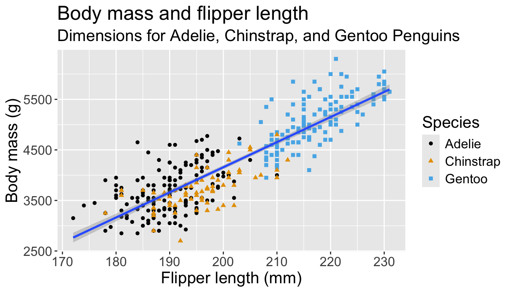

# A tibble: 344 × 8
species island bill_length_mm bill_depth_mm flipper_length_mm body_mass_g
<fct> <fct> <dbl> <dbl> <int> <int>
1 Adelie Torgersen 39.1 18.7 181 3750
2 Adelie Torgersen 39.5 17.4 186 3800
3 Adelie Torgersen 40.3 18 195 3250
4 Adelie Torgersen NA NA NA NA
5 Adelie Torgersen 36.7 19.3 193 3450
6 Adelie Torgersen 39.3 20.6 190 3650
7 Adelie Torgersen 38.9 17.8 181 3625
8 Adelie Torgersen 39.2 19.6 195 4675
9 Adelie Torgersen 34.1 18.1 193 3475
10 Adelie Torgersen 42 20.2 190 4250
# ℹ 334 more rows
# ℹ 2 more variables: sex <fct>, year <int>11: data visualization
STA35B: Statistical Data Science 2
Akira Horiguchi
Purpose of visualizing data
- Exploratory data analysis
- Presenting findings to others
Affects how much effort to put in
- If just exploring data, a plot doesn’t need to look pretty if you can interpret it
- If high-stakes presentation (e.g. for job interview, raise, promotion, etc), might need to add many bespoke features (not focus of this class)
Exploratory data analysis
Cycle through the following:
Generate questions about your data.
Search for answers by visualizing, transforming, and modelling your data.
Use what you learn to refine your questions and/or generate new questions
Requires creativity and critical thinking. Two question categories:
- What type of variation occurs within each variable?
- Mean, standard deviation, skewness, etc
- What type of covariation occurs between variables?
- How does height vary with weight, etc
ggplot2
Visualization
We’ll see how to create beautiful visualizations using ggplot2.
Basic structure of ggplot2
ggplot() constructs the initial plot.
- The first argument of
ggplot()is the data set for the plot.- The data set must be a data frame.
ggplot(data = mpg)creates an empty plot.
You then add one or more layers to ggplot() using +.
geomfunctions add a geometrical object to the plot.geom_point(),geom_smooth(),geom_histogram(),geom_boxplot(), etc.
Creating a ggplot

Creating a ggplot
Creating a ggplot
- Start with function
ggplot() - Add global aesthetics (i.e., aesthetics applied to every layer in plot).
- Add layers.
- Display data using geom: geometrical object used to represent data
geom_bar(): bar chart;geom_line(): lines;geom_boxplot(): boxplot;geom_point(): scatterplot
Adding aesthetics and layers
We can have aesthetics change as a function of variables inside the tibble
- e.g. we can differentiate penguin species via colors
- When a categorical variable is mapped to an aesthetic, each unique level of the variable (here: species) gets assigned a unique aesthetic value (here: unique color)
Adding aesthetics and layers
Let’s add a new layer, geom_smooth(method="lm"), which visualizes line of best fit based on a linear model
- When an aesthetic mapping is added inside
ggplot(), it is applied to all layers.- So
color=speciesinsideggplot()will group all penguins by species. - We now have a line for each species (not one global line).
- So
Adding aesthetics and layers
Let’s add a new layer, geom_smooth(method="lm"), which visualizes line of best fit based on a linear model
- When an aesthetic mapping is added inside a layer, it is applied to just that layer.
- So
color=speciesinsidegeom_point()will group all penguins by species only for that layer. - We now have one global line for all penguins.
- So
Adding aesthetics and layers
Adding aesthetics and layers
Let’s further differentiate different species via shapes.
- We can specify this in a local aesthetic mapping of points using
shape= - The legend will be updated to show this too!
Now just need to add title and axis labels
penguins |>
ggplot(aes(x = flipper_length_mm,
y = body_mass_g)) +
geom_point(aes(color = species,
shape = species)) +
geom_smooth(method = "lm") +
labs(
title = "Body mass and flipper length",
subtitle = "Dimensions for Adelie, Chinstrap, and Gentoo Penguins",
x = "Flipper length (mm)", y = "Body mass (g)",
color = "Species", shape = "Species"
) +
scale_color_colorblind()`geom_smooth()` using formula = 'y ~ x'Warning: Removed 2 rows containing non-finite outside the scale range
(`stat_smooth()`).Warning: Removed 2 rows containing missing values or values outside the scale range
(`geom_point()`).
Visualizing distributions
Categorical variables take only one of a finite set of values
- Bar charts are useful for visualizing categorical variables
Visualizing distributions
You will likely need to spend time tuning the binwidth parameter
Visualizing distributions
- A smoothed out version of histogram which is supposed to approximate a probability density function

Visualizing distributions
- Let’s check the difference between setting
color =vsfill =withgeom_bar:
Visualizing distributions
- Let’s check the difference between setting
color =vsfill =withgeom_bar:

Visualizing distributions
- Box plots allow for visualizing the spread of a distribution
- Makes it easy to see 25th percentile, median, 75th percentile, and outliers (>1.5*IQR from 25th or 75th percentile)

Visualizing distributions
Let’s see distribution of body mass by species…
Playing with visual parameters
Use alpha to add transparency
alphais a number between 0 and 1; 0 = transparent, 1 = opaque
Multiple numerical variables
Already saw how to use scatter plots to visualize two numeric variables
Multiple numerical variables
Too many aesthetic changes (shape, color, fill, size, etc) can clutter plots
Multiple numerical variables
Too many aesthetic changes (shape, color, fill, size, etc) can clutter plots
Multiple numerical variables
Too many aesthetic changes (shape, color, fill, size, etc) can clutter plots
Saving plots
Once you’ve made a plot, you can save using ggsave()
- Either can save whatever plot you made last:
- Or you can save the plot object and save that